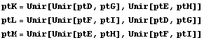
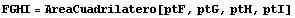

Enunciado del problema
Consideremos un triángulo ABC cualquiera. Sean D y E puntos sobre el lado BC, F y G puntos sobre el lado CA yH y I puntos sobre el lado AB, tal que BD:DE:EC = CF:FG:GA = AH:HI:IB = p:q:r con p+q+r=1, p,q, r > 0.Sean K,L y M los puntos de intersección de las diagonales DG y EH, FI y DG, y EH y FI. Probar que :
- El área de los cuadriláteros DEFG, FGHI, y HIDE es igual a q veces el área de ABC.
- Las áreas de los triángulos GHK, IDL y EFM son iguales a k -se hallará- veces el área de ABC.
- Las áreas de los triángulos DEK, FGL y HIM son iguales a h -se hallará- veces el área de ABC
- El área del triángulo KLM es igial a l -se hallará-, veces al área de ABC.
{571., 303.}, ImageMargins -> {{0., 0.}, {0., 0.}}, ImageRegion -> {{0., 1.}, {0., 1.}}]" width="576" height="308" align="absmiddle" />
Fórmulas necesarias
Como estamos usando Mathematica para resolver el problema, representamos puntos y rectas como ternas {u,v,w} de números. Teniendo en cuenta que {au, av, aw} es equivalente a {u,v,w}, usaremos una función Simplificar para eliminar factores como el a anterior.
Usaremos también la misma función Unir para hallar el punto de intersección de dos rectas y para hallar la recta que une dos puntos.
Finalmente, definimos las funciones que calculan el área de un triángulo y de un cuadrilátero en coordenadas baricéntricas.
Introducción de datos
Ahora introducimos directamente las coordenadas de algunos de los puntos que intervienen en el problema:
Usamos la función Unir para hallar los tres puntos de intersección de las diagonales

Cálculos
Ahora, calculamos las áreas de todos los triángulos y cuadriláteros pedidas en el enunciado.



Created by Mathematica (March 1, 2005)